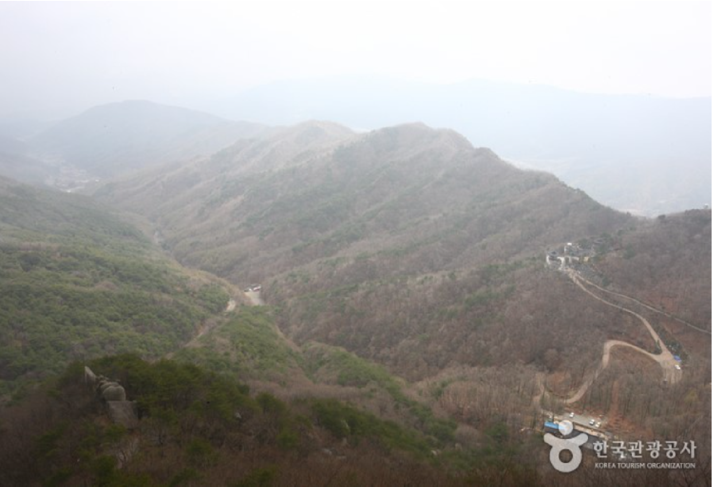
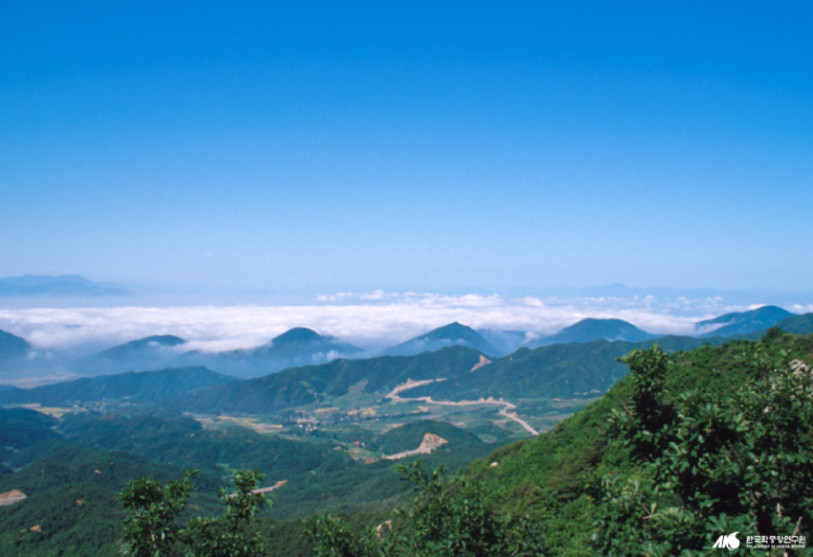
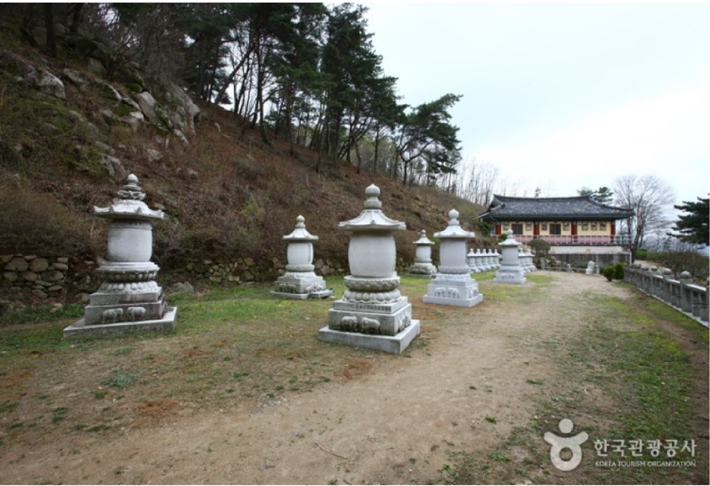

팔공산
- 대구 팔공산
- 팔공산은 우리나라 약사신앙의 1번지이다. 그리고 그 제일 앞자리에 ‘갓바위 부처님’, 관봉석조여래좌상이 있다.
갓바위에 오르면 현대인의 마음에까지 넓은 그늘을 드리우고 있는 거구의 석불상을 우러를 수 있다.
아울러 제가끔의 바람을 간직한 채 석불상에 머리를 조아리는 ‘중생’들을 통해 오늘도 생생히 살아 있는 신앙의 현장, 시대의 풍속도를 두 눈에 담을 수 있다.
선본사 삼층석탑을 보기 위해서도 갓바위는 뒤편으로 오를 일이다. 노적봉에서 흘러내린 산줄기에 우뚝한 이 탑은 삼층석탑 전성기의 여운을 짙게 간직하고 있다.

팔공산
- 대구 팔공산
- 남쪽 자락에는 팔공산 절집의 간판격인 동화사를 비롯하여 파계사·부인사·북지장사가 고만고만한 거리를 두고 밀집해 있다.
원통전 수미단이 빼어난 파계사는 조선시대 원당사찰의 본보기가 되는 절이다. 초조대장경을 보관했던 부인사는 옛모습은 간데없고 새 단장에 어수선하다.
그래도 석탑·석등·배례석·부도 따위가 가볍지 않아 빠뜨릴 수 없는 곳이다.
절 아래쪽 신무동 포도밭에는 마애불좌상이 사철 밝은 햇빛 속에 드러나 있으니 이 또한 그냥 지나치지 말 일이다.

팔공산
- 대구 팔공산
- 팔공산 자락이 남으로 이어진 환성산 아래 환성사가 있다.
하양에서 절까지 이르는 길은 따분하지만 절에 들면 그런대로 볼거리에 마음이 가라앉는다.
일주문을 받쳤던 듬직한 돌기둥이 인상적이고, 대웅전 또한 요모조모 뜯어볼 만하다.
대구시내의 박물관을 찾는 것도 잊지 말아야 한다.
1994년 문을 연 국립대구박물관은 반드시 들러야 할 곳이다.
이곳에 전시된 선산 봉한동 출토 삼존불상을 보지 않는다면 팔공산 답사는 헛걸음이다.
